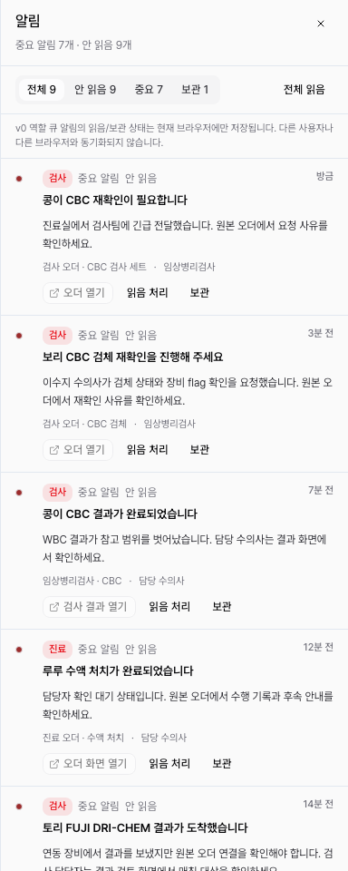

DEN-400 전역 알림 v0 fixture 완료 보고서
전역 알림 v0 이벤트 매트릭스의 10개 event key가 모두 mock fixture로 표현되도록 확장했다. 데이터는 synthetic demo data이며, live provider/device delivery나 Supabase persistence로 확장하지 않았다.
변경
order_recheck_requested,assigned_order_completed,device_result_received,billing_waiting_readyfixture를 추가했다.- 모든 fixture에 recipient, source, badge/toast/action, priority, dedupe key, local state key를 유지했다.
device_result_received에fallback_detail+missing_sourcecase를 포함했다.- 영상 결과 완료 fixture를 승인 정책에 맞게 action/badge 대상 이벤트로 정렬했다.
- 조제/처치 완료와 수납 대기 전환은 unread여도 shell badge에 포함하지 않는 reference row로 유지했다.
제외 범위
live event ingestion, provider/device real integration, remote Supabase migration/RLS/live validation, Kakao/SMS/email, 공지 발행 시스템, 자유 멘션 시스템은 포함하지 않았다. source navigation, toast stack, dedupe/update-bump resolver는 후속 DEN-401~403 범위다.
검증
npm run lint통과. 기존 경고 4개는 유지된다.npx tsc --noEmit통과.PLAYWRIGHT_BASE_URL=http://localhost:3000 npx playwright test tests/notification-fixtures.spec.ts tests/app-shell.spec.ts -g "notification"통과: 7 passed.npm run docs:check통과.- Playwright Chromium으로 drawer screenshot smoke를 수행했다.

리뷰 반영
서브에이전트 리뷰에서 누락 event key, imaging 정책 불일치, fallback fixture 부재, count test 재조정 필요가 지적되어 모두 반영했다.